2024年巴黎奥运会赛程已过半，中国代表团已拿下21块金牌。在这个过程中，有很多热血的瞬间值得大家铭记，喜悦大过遗憾。而更让大家惊喜的是，北京冬奥会冠军谷爱凌要参加巴黎奥运会了，谷爱凌将在巴黎当地时间8月10日踏上马拉松的赛场。
不仅如此，谷爱凌密切关注着各种赛事，通过跑步辗转于各个比赛现场，平均每天就要观赛至少三四场，这期间，谷爱凌和很多奥运健儿实现了梦幻同框，多次互动画面十分养眼。
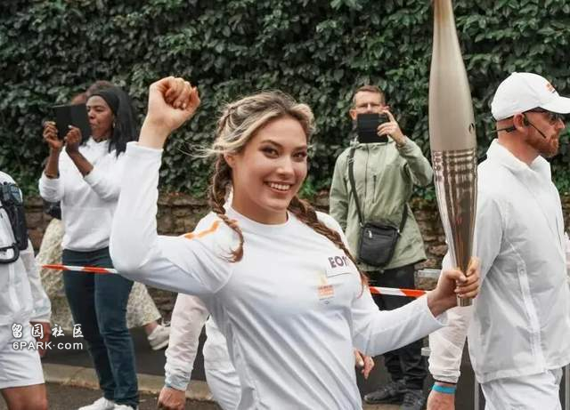
谷爱凌近日更新大量和中国游泳队的合影，并把对方称作是自己的奥运朋友们。其中，她还和徐嘉余、覃海洋、孙佳俊、潘展乐特地来了个大合照，这次四人配合默契，齐心协力在4×100米混合泳接力项目中夺金，谷爱凌见证夺金瞬间，并专门和发挥超常的潘展乐握手。
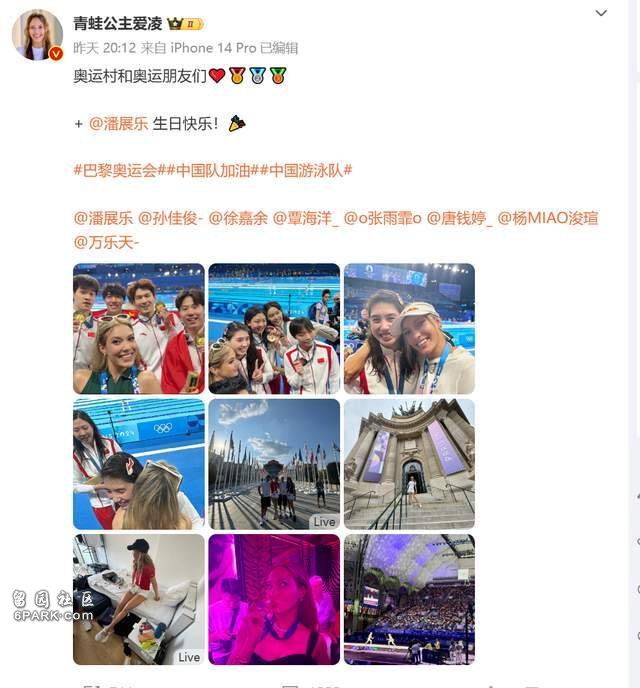
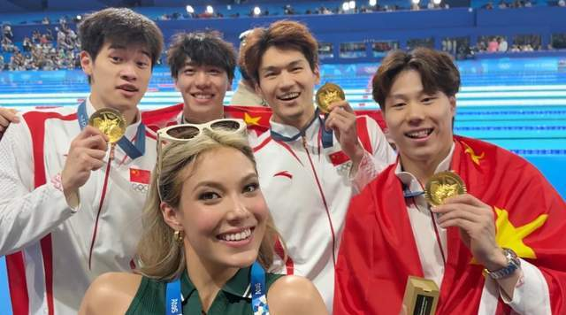
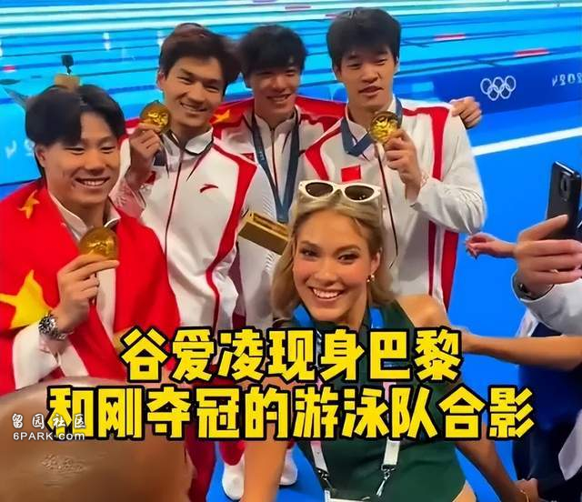
不仅如此，谷爱凌还和游泳小将张雨霏面基成功，二人深情相拥，这次张雨霏参加了6个项目，一共获得6枚奖牌。在此之前，谷爱凌和张雨霏分别隔空为对方打气，直言对方很优秀，这次终于圆满了。
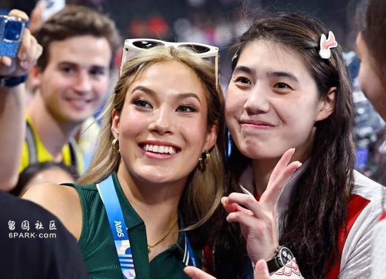
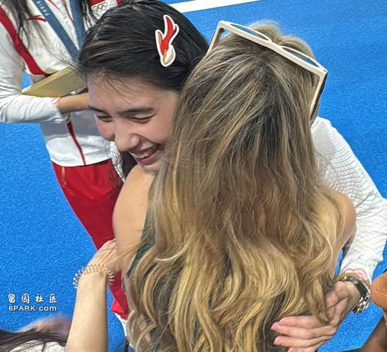
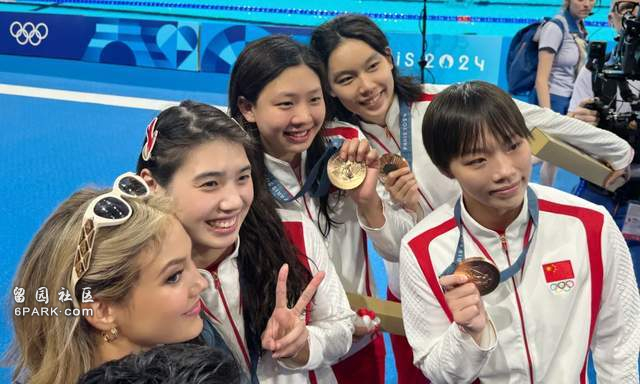
谷爱凌曾以滑雪运动员的身份为中国夺金，她也很受奥运健儿们的欢迎。谷爱凌还惊喜探班正在接受采访的全红婵，对方自称是谷爱凌的迷妹，大呼真人太漂亮。
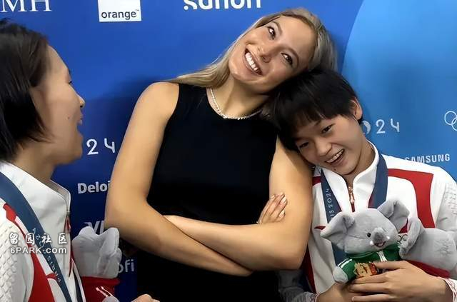
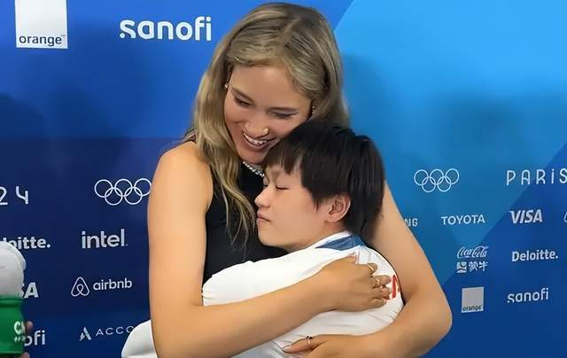
谷爱凌积极和奥运健儿们互动，和潘展乐以及张雨霏的互动还上了热搜，虽然她这次并未以中国代表团一员的身份参赛，但动态却不少。不过，或许是人红是非多吧，谷爱凌积极经营在内地的社交平台，可却被发现在外网上只祝贺了外国运动员夺金，并因此被质疑是双面人，只为了蹭热度，还有网友嘲讽她是翻版网红晚晚。
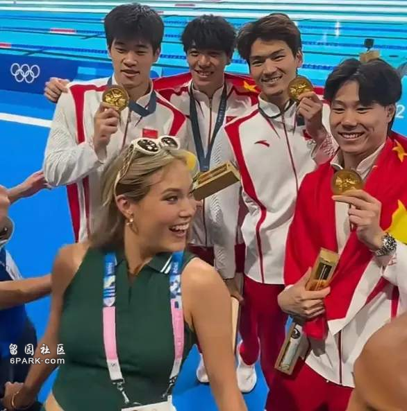
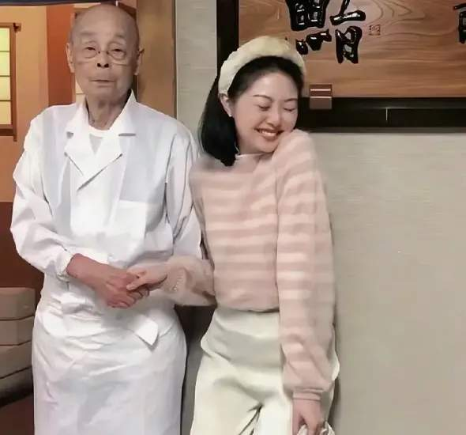
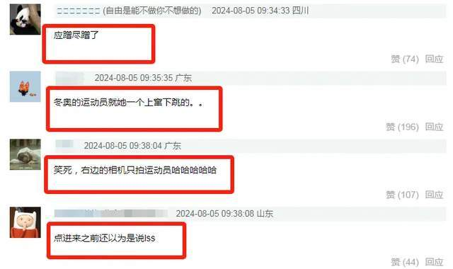
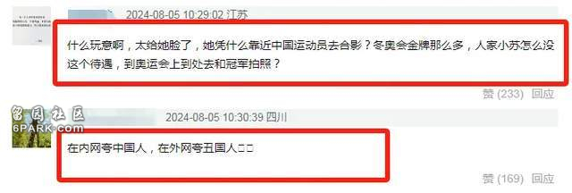
网友们的质疑并非是空穴来风，此前美国人运动员诺阿·莱尔斯在田径男子百米飞人大战夺冠，20年后美国再夺百米奥运冠军，谷爱凌并未观赛却在第一时间祝贺。反之，郑钦文拿下奥运会网球女子单打冠军，可谷爱凌仅仅只是晒出观赛照，却并未公开祝贺。
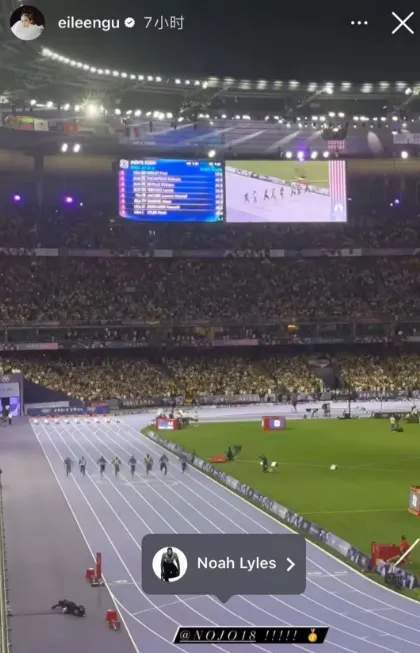
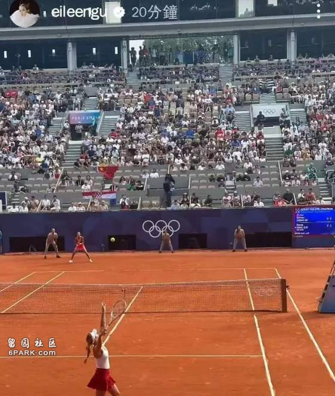
不可否认，谷爱凌之前为国争光，其全能的正面形象激励了很多女性。可她从始至终都没有为夺冠的中国运动员在外网祝贺，却先后力挺了200米混合泳决赛夺冠者马尔尚和美国运动员，退一万步说，谷爱凌有祝福国外选手获得好成绩的权利，但部分网友更希望她能一视同仁，在微博的谷爱凌非常积极互动，但在外网她似乎并没有关注这些积极互动的中国运动员，却关注了有辱华争议的欧美运动员。
话又说回来，其实谷爱凌很早就出国深造，成长环境受到了国外的影响，她为中国夺金值得铭记，但却不止一次被吐槽是双面人。在采访中，谷爱凌还放话自己在中国就是中国人，在美国就是美国人，对内和对外展现出的态度有一些不同。
最后还是想说，谷爱凌为中国争光的过去不能抹灭，但有些行为确实存在争议，比如之前给无视中国教练握手的运动员祝贺，所以也不怪网友过多关注。